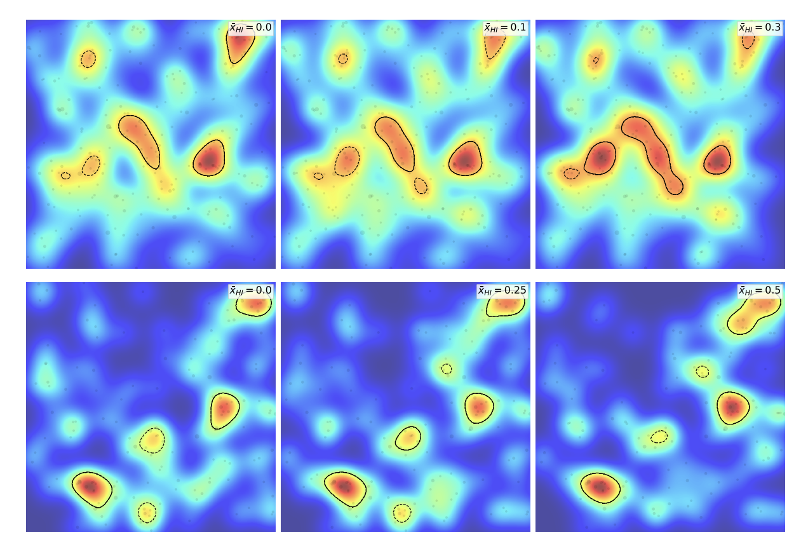
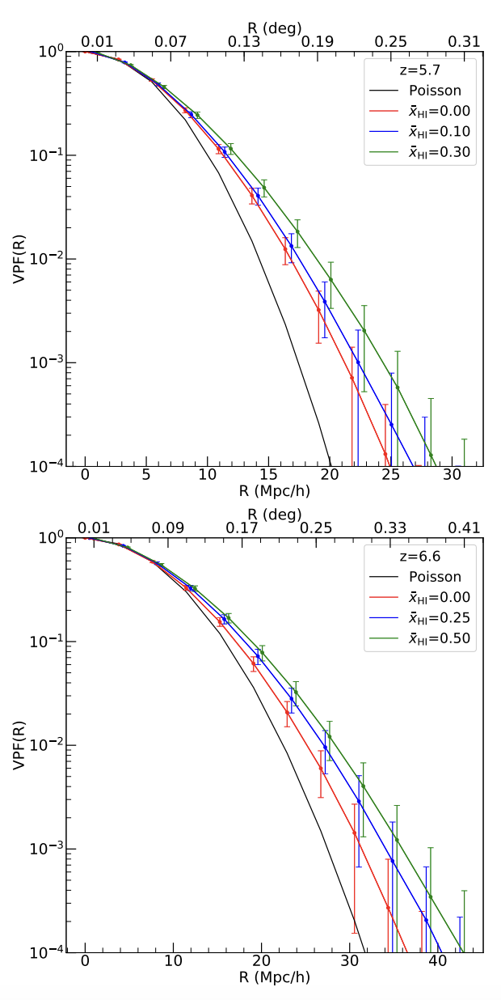

My name is Nakul Gangolli, and I am currently pursuing my PhD Degree in Physics, with an emphasis in Astrophysics. My research is largely in studying the Epoch of Reionization (imagine the Universe as a baby undergoing a growth spurt and spewing energetic photons into space instead of spitup) and it's relation to the evolution from galaxies all the way up to the large scale structure.
However, more than my research I am also interested in the standard stuff like hiking, video games, Star Wars, Lord of the Rings, and essentially all things geeky in the world. But recently my girlfriend has gotten me on a reality TV kick, so please do not judge me.
Also, this page is actively undergoing construction, so please forgive me for it's rough-and-ready appearance!
Research
These are some of the projects I have been working on:
Constraining reionization in progress at z = 5.7 with Lyman-α emitters: voids, peaks, and cosmic variance

Examples of my cluster finding algorithm (and the void looks for the voids), left to right are different models of reionization, and the top row represents the distribution of the clusters at later times, while the lower plot is at earlier times. It showcases how at late times, large scale structures are more prevalent due to the evolution of the Universe during this time period.
Image Wheel

On the correlation between Lyα forest opacity and galaxy density in late reionization models
Here are some of my pet projects that I am currently working on. Most of them of off-line but I plan on putting them on Github soon!!
Classifying the Morphologies of Galaxies
Fake News Classifier
One of the biggest problems in the media and political space is the propagation of fake news, and in this pet project, I wanted to create use NLP methods and ML/AI to categorize fake news artcles from a host of different places ranging from accredited newpapers like the New York Times and Washington Post, all the way to Breitbart and Reddit. In this work I use multiple different machine learning algorithms ranging from relatively simple Random Forests to the more complex XGBoost and ultimately using recursive neural netwoks using LSTM nodes. I even compare my results to a pre-calibrated LLM called BERT (although I used the smallest one in all fairness), and I found that my locally calibrated weights achieved ~10% higher accuracy on average!
Economic Scores of Large Counties
Skills
Coding Skills
Python
NumPy
SciPy
Astropy
Pandas
Matplotlib
C++
HTML
CSS
Cluster/Cloud Computing
Pipeline Development
Pipeline Maintenance
Pipeline Management
Pipeline Orchestration
AWS
Knowledge of GCP and Azure
Knowledge of Kubernetes and Docker
Knowledge of Databricks
Statistical Analysis, Machine Learning, and Artificial Intelligence
TensorFlow
PyTorch
Scikit-Image
Scikit-learn
Bayesian Inferences
Hypothesis and A/B Testing
Clustering Analysis
Natural Language Processing/Large Learning Models
Linear/Logistic Regression
Resume/CV
Here is a copy of my resumé with everything I've done!